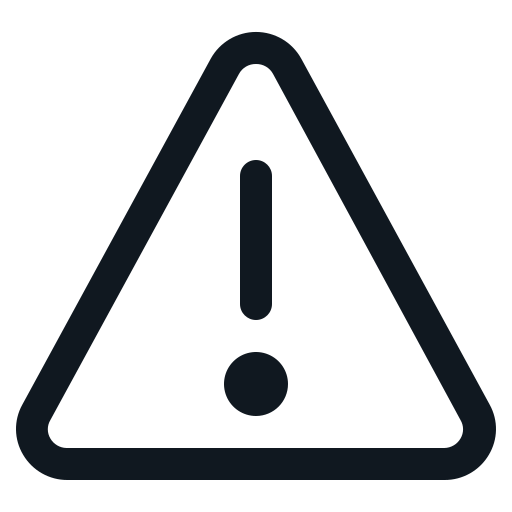

Як підготуватися до обстеження?
Вам треба буде пройти обстеження на високотехнологічному комп'ютерному томографі, який відповідає найвищим стандартам якості і безпеки, і в цьому вам допоможе кваліфікований медичний персонал.

Зніміть з голови і шиї всі металеві предмети і прикраси.
Про наявність коронок і знімних конструкцій необхідно повідомити лаборанту до початку обстеження.
Обстеження триватиме до 30 секунд. Під час обстеження:
НЕ РУХАТИСЬ
НЕ ЗДІЙСНЮВАТИ ковтальні рухи
НЕ СЛІДКУВАТИ ОЧИМА за апаратом що обертається
Наше сучасне обладнання дозволяє виконувати обстеження з мінімальним променевим навантаженням.
Як часто можна робити Конусно Променеву Комп'ютерну Томографію (КПКТ)?
По санітарно-епідеміологічних правилах на медичні профілактичні рентгенологічні дослідження дозволено в рік отримати променеве навантаження до 1000 мкЗв. КПКТ двох щелеп виконується з променевим навантаженням до 75 мкЗв. Отже, в рік можна зробити більше 10 КЛКТ.
Чи є протипоказання для КТ?
Відносним протипоказанням для проведення КТ є психічні захворювання і стани, які не дозволяють пацієнтові зберігати нерухомість під час обстеження. Вагітність не є протипоказанням, про те дослідження проводиться строго за клінічними показаннями, бажано в другу половину вагітності, тільки з письмового дозволу тільки з дозволу акушера гінеколога.
Чи є різниця, на якому апараті робити обстеження КТ?
На сьогоднішній день існує багато фірм - виробників комп'ютерних томографів, які надають свої послуги на ринку. Самі апарати багато в чому схожі між собою за якістю зображення. Основна відмінність - в програмному забезпеченні апаратів. Деякі фірми надають з томографами тільки так звані програми - переглядачі. Це програми, які дозволяють тільки переглянути КТ зображення. Інші фірми розробили для своїх томографів спеціальні вузькоспеціалізовані програми, які дають лікарям можливість використовувати додаткові функції, розроблені саме для стоматологів.
Яким фахівцям в стоматології необхідно КПКТ?
Всім!
Імплантологам, так як тільки КТ дозволяє лікарю точно визначити висоту і товщину альвеолярного відростка, структуру кісткової тканини.
Терапевтам КТ необхідно для визначення додаткових каналів в зубах, розташування канали місцями, їх довжини, розмірів періапікальних змін.
Ортодонт - для вирішення питань дістопіровованних і ретенованих зубів, можливості виведення їх в зубний ряд, планування виправлення прикусу, стан СНЩС.
Ортопедів - для планування установки ортопедичних конструкцій.
У чому відмінність Конусно Променевих Комп'ютерних Томографів від "великих" томографів (МСКТ)?
Мультиcпіральні комп'ютерні томографи, призначені для діагностики патології органів черевної порожнини, легень, органів малого таза, досить великих анатомічних структур людини. Тому роздільна здатність таких томографів зазвичай досить низька (від 1 мм і далі).
Зуби і їх канали є «дуже маленькими» об'єктами для МСКТ. Виявити на них карієс або періапікальні зміни не представляється можливим, так як Їх розміри менше мінімальної товщини зрізу таких томографів і, отже, вони не будуть помітні на КТ зображенні. Спеціально для зубощелепної системи були розроблені конусно-променеві комп'ютерні томографи, в яких мінімальна товщина зрізу була зменшена до 0,1 мм. Цього достатньо для виявлення дрібних патологічних змін зубів.
Крім того, так як область обстеження в стоматології відносно невелика, необхідність у великій експозиції (променевому навантаженні) на пацієнта не виникає. У зв'язку з цим, променеве навантаження на пацієнта в КПКТ зменшена в рази (до десяти разів) в порівнянні з МСКТ, що дозволяє робити обстеження на таких томографах частіше і безпечніше.
Ще одна перевага КПКТ томографів - це доступність і швидкість виконання обстеження. Якщо обстеження на МСКТ займає десять і більше хвилин, то на КПКТ пацієнт піддається променевому навантаженню менше хвилини (у нас до 30 секунд).
Чим ортопантомограмма відрізняється від КПКТ?
Основні відмінності КПКТ від ОПТГ.
КПКТ - тривимірне дослідження, яке дозволяє лікарю вивчити анатомічну структуру що цікавить його в трьох площинах, під будь-яким кутом, КПКТ - відсутні проекційні спотворення. Це означає, що розміри і форма зубів завжди будуть такі ж, як і у пацієнта в ротовій порожнині, масштаб 1:1. Це дає можливість лікарю - стоматологу провести більш якісну діагностику, та планування перед подальшим лікуванням.
Чи можна робити 3D обстеження з металевими конструкціями?
Металеві об'єкти не є протипоказанням для проведення обстеження, але їх наявність викликає артефакти, які можуть знизити діагностичну цінність.